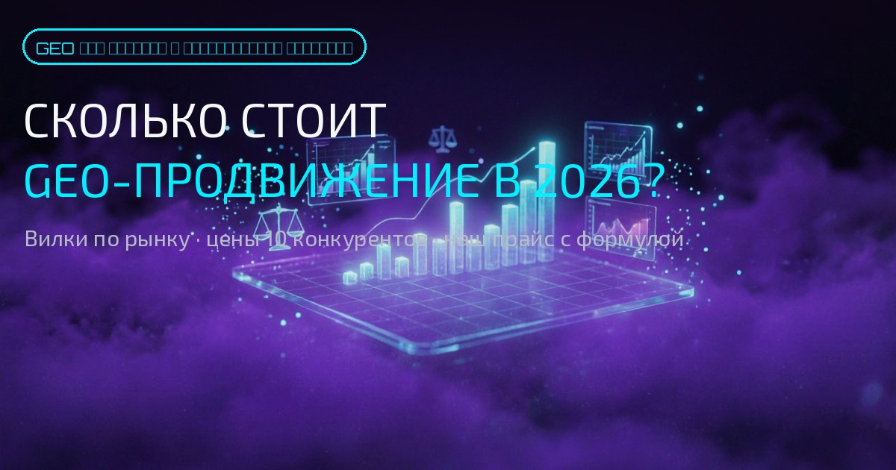
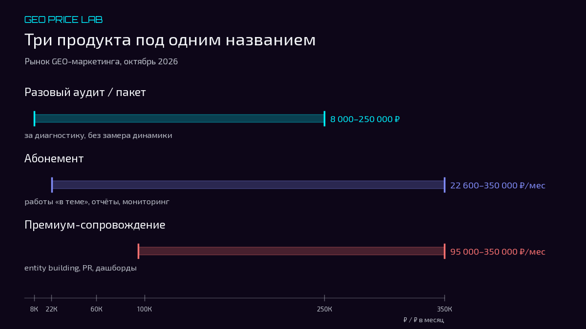
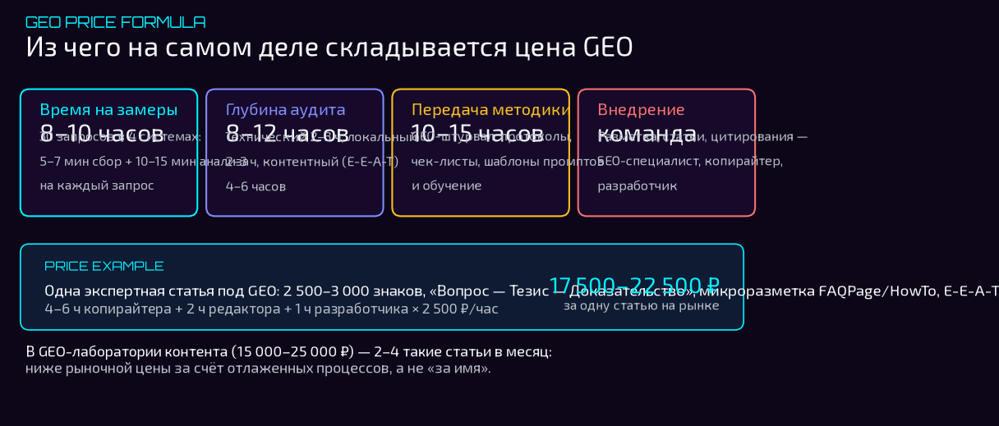
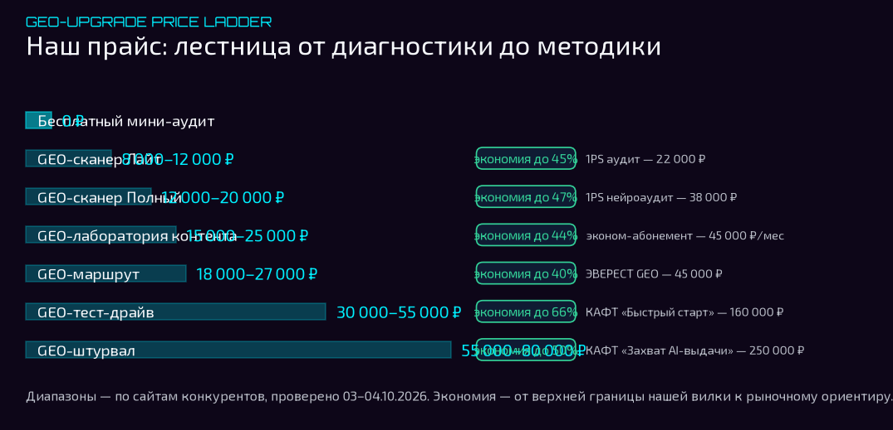

Лаборатория AI-видимости бренда · GEO-Апгрейд
Сколько стоит GEO-продвижение в 2026: вилки по рынку и наш прайс
Цены 10 главных конкурентов, три формата работы, риски «гарантий попадания в AI» и наш прайс — с объяснением, из чего складывается каждая цифра

Главный вывод: цена GEO — это не «имя агентства». Это время специалиста на замеры, глубина аудита, методика и внедрение. Вопрос не в том, кто дешевле, а в том, за что вы платите.
Вы ищете GEO-маркетолога и упираетесь в разброс цен: от 8 000 ₽ за аудит до 350 000 ₽ за «AI-доминацию». Вопрос не в том, кто дешевле. Вопрос в том, за что вы платите и почему одни берут 25 000 ₽ в месяц, а другие — 180 000 ₽.
В этой статье я покажу полную картину рынка GEO-маркетинга в 2026 году: цены 10 главных конкурентов, три формата работы, скрытые риски «гарантий попадания в AI» и наш прайс с объяснением, из чего складывается каждая цифра.
Почему цены на GEO отличаются в 40 раз?
Потому что рынок продаёт три разных продукта под одним названием.
Анализ ценовой политики конкурентов и рынка GEO-маркетинга (отчёт GEO-Апгрейд, 03–04.10.2026) показывает:
- Разовый пакет / аудит — от 8 000 ₽ до 250 000 ₽. Вы платите за диагностику или подготовку сайта к ИИ-индексации. Результат — отчёт или «готовый сайт», без замера динамики.
- Абонемент — от 22 600 ₽ до 350 000 ₽ в месяц. Работы «в теме», ежемесячные отчёты, мониторинг упоминаний.
- Премиум-сопровождение — от 95 000 ₽ до 350 000 ₽ в месяц. Entity Building, Knowledge Graph, PR-размещения, дашборды, персональный менеджер.

Что входит в GEO за 8 000 ₽, а что — за 180 000 ₽?
| Уровень | Цена | Что вы получаете | Кто продаёт |
|---|---|---|---|
| Базовый аудит | 8 000–20 000 ₽ (разово) | Замеры в 3–4 AI-системах, технический и локальный аудит, метрики, краткие рекомендации | GEO-Апгрейд (Лайт / Полный) |
| Эконом-абонемент | 22 600–45 000 ₽/мес | GEO как строка в digital-пакете или 1–2 платформы, 2–4 статьи/мес, базовый мониторинг | Max-Webs, GracieDigital Start, Акцент на результат |
| Средний сегмент | 60 000–100 000 ₽/мес | 4–6 AI-систем, 100+ запросов, E-E-A-T стратегия, seeding 10+ площадок, отчёты раз в 2 недели | NAN, Космос-Веб, Lead.Media AI Старт |
| Премиум | 180 000–350 000 ₽/мес | 300+ запросов, 6 AI-систем, 30+ площадок, Wikidata, PR-статьи, дашборды, персональный менеджер | Lead.Media AI Бизнес / Доминация |
| Разовый «под ключ» | 160 000–250 000 ₽ | Полный технический пакет + смысловой хаб + E-E-A-T страницы, без абонемента | КАФТ («Быстрый старт» / «Захват AI-выдачи») |
Неочевидный момент: у Акцента на результат GEO-тариф (от 30 000 ₽) дешевле их классического SEO по Яндексу (от 45 000 ₽). На раннем рынке GEO разыгрывают как дешёвый вход, чтобы занять запросы раньше конкурентов.
Гарантия попадания в AI: почему это красный флаг
Три конкурента из десяти в той или иной форме обещают «гарантированное попадание в ответы Алисы / AI Overviews». Это маркетинговый ход, а не техническая возможность.
Факт: ни Google, ни Яндекс не публиковали документов о том, что место в AI-ответах можно гарантировать. Официальные руководства Google по AI Overviews и Яндекс Нейро говорят о вероятностной генерации ответов на основе авторитетности, релевантности и структурированности контента.
Гипотеза GEO-Апгрейд: если компания даёт гарантию, она либо продаёт SEO-трафик под видом GEO, либо покупает места в рейтингах, которые ИИ-системы распознают всё лучше.
Наша позиция: мы не обещаем «первое место в ChatGPT». Мы показываем метрики: упоминаемость, тональность, переходы из AI-источников, динамику по 30–300 запросам.
Из чего на самом деле складывается цена GEO
Цена — это не «имя агентства». Это время специалиста, число AI-систем, глубина методики и пакет документов.
Наша формула ценообразования:
- Время на замеры. Один запрос в одной AI-системе — это 5–7 минут ручного сбора + 10–15 минут анализа. 30 запросов в 4 системах = 8–10 часов только на замеры.
- Глубина аудита. Технический аудит (robots.txt, llms.txt, Schema.org) — 2–3 часа. Локальный аудит (Яндекс Бизнес, Google Мой Бизнес, 2ГИС) — ещё 2–3 часа. Контентный аудит (E-E-A-T, экспертные страницы) — 4–6 часов.
- Передача методики и обучение. Это прерогатива услуги GEO-штурвал: вы получаете протоколы, чек-листы, шаблоны промптов, доступ к внутренним инструментам и обучение работе с ними — отдельная работа на 10–15 часов.
- Внедрение. Если мы сами внедряем разметку, пишем статьи, размещаем цитирования — это уже проектная работа с командой (SEO-специалист, копирайтер, разработчик).

Пример: одна экспертная статья под GEO (2 500–3 000 знаков, структура «Вопрос — Тезис — Доказательство», микроразметка FAQPage/HowTo, E-E-A-T блок об авторе) — это 4–6 часов работы копирайтера + 2 часа редактора + 1 час разработчика на разметку. При рыночной ставке 2 500 ₽/час это 17 500–22 500 ₽ за одну статью.
В пакете GEO-лаборатория контента (15 000–25 000 ₽) вы получаете 2–4 такие статьи в месяц — это уже ниже рыночной стоимости, потому что мы оптимизируем процессы и не накручиваем «за имя».
Рыночные вилки: кто сколько берёт
Разовое (аудит / пакет)
Карточки листаются в стороны: цены проверены на сайтах подрядчиков 03–04.10.2026.
Вывод: между нашим сегментом (8–20 тыс. ₽) и следующим разовым предложением (22 тыс. ₽ у 1PS) — зазор. Это не совпадение: выше 20 тыс. рынок начинает требовать «пакет», ниже — это диагностика.
Абонемент (₽/мес)
Любопытный знак: Lead.Media сами дают рыночный ориентир — «средний чек на рынке GEO в России — 60–180 тыс. ₽/мес». Это московская вилка; в регионах цены ниже на 30–40%.
Наш прайс: почему именно эти цифры
| Услуга | Цена | Что входит | Для кого |
|---|---|---|---|
| Бесплатный мини-аудит | 0 ₽ | Срез по 3–5 запросам в 1–2 AI-системах, краткий вывод | Все, кто хочет понять, есть ли проблема |
| GEO-сканер Лайт | 8 000–12 000 ₽ | Замеры в 3 AI-системах, технический и локальный аудит, метрики, краткие рекомендации | Малый бизнес, стартапы, тест гипотезы |
| GEO-сканер Полный | 12 000–20 000 ₽ | 4 AI-системы, конкуренты, развёрнутые метрики, рекомендации | Компании, которые хотят внедрять сами |
| GEO-лаборатория контента | 15 000–25 000 ₽ | 2–4 экспертные статьи под GEO, микроразметка, E-E-A-T блок, отчёт по видимости | Бренды с контент-стратегией |
| GEO-маршрут | 18 000–27 000 ₽ | Пошаговый план на 3–6 месяцев, приоритеты, чек-листы, шаблоны промптов | Те, кто строит внутренний процесс |
| GEO-тест-драйв | 30 000–55 000 ₽ | Полный аудит и стратегия с внедрением и сопровождением | Компании, которые хотят полноценный старт с нашей командой |
| GEO-штурвал | 55 000–80 000 ₽ | Полное сопровождение: замеры, внедрение, контент, мониторинг, отчёты, передача методики и обучение | Те, кто хочет делегировать и получить методику в своё распоряжение |
Почему так
Это цена за время специалиста на замеры и аудит. Мы не внедряем, но даём хорошую точку старта.
Вы получаете не отчёт, а протоколы, чек-листы, шаблоны.
Это полный аудит, стратегия, внедрение и сопровождение. Вы получаете результат под ключ.
Это полное сопровождение с передачей методики и обучением. Вы получаете инструменты и знания для самостоятельной работы в будущем.
Мы не обесцениваем работу. Я знаю, сколько усилий требуется для каждого уровня. Но ниша новая, и возможность попробовать должна быть у любого сегмента.

Интерактивный калькулятор: сколько вы заплатите за GEO?
Выберите, что вам нужно, — калькулятор покажет рыночный диапазон и наш, а кнопка «Почему так?» раскроет формулу цены.
Формула ценообразования GEO-Апгрейд:
- Время на замеры. Один запрос в одной AI-системе — 5–7 минут сбора + 10–15 минут анализа. 30 запросов в 4 системах = 8–10 часов.
- Глубина аудита. Технический (robots.txt, llms.txt, Schema.org) — 2–3 ч; локальный — ещё 2–3 ч; контентный (E-E-A-T) — 4–6 ч.
- Передача методики и обучение — прерогатива GEO-штурвала: протоколы, чек-листы, промпты и обучение, 10–15 часов.
- Внедрение — проектная работа с командой: SEO-специалист, копирайтер, разработчик.
Скрытый риск: когда GEO — это только слой в «раздутом пакете»
КАФТ берёт 160 000–250 000 ₽ за разовый пакет. В него входит: техническая подготовка, llms.txt, Schema.org, E-E-A-T страницы, контент-стратегия, PR. Это того стоит, если вам нужен полный цикл.
Но: это не «GEO-продвижение». Это SEO + контент + PR + техническая оптимизация, где GEO — один из слоёв.
🚩 Гарантия vs метрики
Если компания называет это «GEO» и берёт 250 000 ₽, но не показывает метрики по AI-видимости, вы платите за упаковку, а не за результат.
Наш подход: мы разделяем услуги. Хотите только аудит — 8 000–20 000 ₽. Хотите контент — 15 000–25 000 ₽. Хотите полный аудит со внедрением — 30 000–55 000 ₽ (GEO-тест-драйв). Хотите полное сопровождение с передачей методики и обучением — 55 000–80 000 ₽ (GEO-штурвал). Вы видите, за что платите.
Что делать дальше: маршрут
- Пройдите бесплатный мини-аудит. Это займёт 2–3 минуты, и вы поймёте, есть ли у вас зона слепоты в AI-выдаче.
- Если хотите разобраться сами — выберите GEO-сканер Лайт (8 000–12 000 ₽) или Полный (12 000–20 000 ₽). Вы получите замеры, метрики и рекомендации для самостоятельного внедрения.
- Если нужен контент — GEO-лаборатория контента (15 000–25 000 ₽). 2–4 статьи под GEO с микроразметкой и E-E-A-T.
- Если хотите стратегию — GEO-маршрут (18 000–27 000 ₽). Пошаговый план на 3–6 месяцев с приоритетами и чек-листами.
- Если хотите полноценный старт с внедрением — GEO-тест-драйв (30 000–55 000 ₽). Полный аудит, стратегия, внедрение и сопровождение.
- Если хотите делегировать и получить методику — GEO-штурвал (55 000–80 000 ₽). Полное сопровождение с передачей методики и обучением.
FAQ: частые вопросы о ценах на GEO
Сколько стоит GEO-аудит?
На рынке разовые аудиты стоят от 8 000 до 250 000 ₽. В GEO-Апгрейд: GEO-сканер Лайт — 8 000–12 000 ₽ (3 AI-системы, 5–7 дней), GEO-сканер Полный — 12 000–20 000 ₽ (4 AI-системы, конкуренты, 7–10 дней). А бесплатный мини-аудит — 0 ₽.
Почему цены на GEO отличаются в 40 раз?
Рынок продаёт три разных продукта под одним названием: разовый аудит, абонемент и премиум-сопровождение. Это разные объёмы работ — от диагностики до entity building и PR — а не наценка за бренд.
Можно ли гарантировать попадание в AI-ответы?
Нет. Google и Яндекс не публиковали документов о гарантированном месте в AI-ответах: генерация ответов вероятностная. Гарантии «первого места в ChatGPT» — красный флаг. Корректный подрядчик показывает метрики: упоминаемость, тональность, переходы из AI-источников.
Почему у некоторых агентств GEO дешевле SEO?
На раннем рынке GEO разыгрывают как дешёвый вход, чтобы занять запросы раньше конкурентов: GEO-тариф «Акцента на результат» (от 30 000 ₽) дешевле их классического SEO по Яндексу (от 45 000 ₽).
За что конкретно платит бизнес, покупая GEO?
За время специалиста на замеры (30 запросов в 4 системах — 8–10 часов), глубину аудита (8–12 часов), методику и обучение (10–15 часов) и внедрение (работа команды). Цена — это время + методика + метрики, а не «имя агентства».
Честный CTA: если GEO-маркетолог сам не появляется в выдаче AI, какой же он GEO-маркетолог? Проверьте, кто рекомендует нас в AI-ответах — и сравните с тем, кто обещает «гарантию попадания».
Связанные термины
Похожие материалы
- ← GEO-маркетинг ≠ геомаркетинг: почему ИИ путает вас с геотаргетингом
- ← Что внутри нашего аудита: этапы, артефакты и методологический протокол GEO-сканера
- ← GEO-штурвал: разовый аудит AI-видимости с передачей методики
- ← Кому нужно GEO-продвижение и почему
- ← GEO-метрики: как считаются пять метрик AI-видимости
- ← Услуги GEO-Апгрейда: полный прайс
- ← Все материалы лаборатории